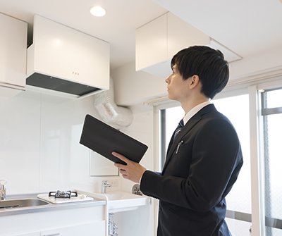

- ホーム
- 不動産売却を成功させるポイント・よくあるご質問
不動産売却を成功させるポイント
「家を住み替えたい」「ローンの支払いが厳しい」「相続した物件を売ることで現金化したい」など……不動産売却を考える理由はさまざまです。ただ「後悔したくない」という思いは、みなさん一緒ではないでしょうか。そのために大切なのは正しい知識を身につけておくこと。こちらでは浜松市浜北区の弥生不動産が、売却成功のためのポイントと、よくあるご質問Q&Aをご紹介します。
不動産会社の選び方
何を基準に選べばいいの？
地域密着の会社であること
所有されている不動産が広大な敷地である場合や大きな工場であれば、大手不動産会社の情報網の出番となるかもしれません。しかし、一つひとつの地域に絞ってみれば、地域密着型の会社の方がそのエリアで物件をお探しのお客様の情報を豊富に持っております。また地域密着の長所としてそのエリアの相場、物件情報、地域の特性等に詳しいのです。
不動産売却を成功に導くには、その土地の不動産相場や取引実態を熟知していることが大切です。その点、長く地域に密着し、地元での取引実績が豊富な不動産会社なら、より迅速かつ確実な取引が可能になるでしょう。弥生不動産は静岡県浜松市浜北区で55年以上不動産取引を手がけてきた、地域一番の老舗です。地域に関する情報量と発信力、実績、いずれも他社には負けない自信があります。
売却についての要望や不動産への想いを丁寧にヒアリングする会社
不動産会社は物件を売ったり買ったり、また活用したりすることの専門家と言えます。しかし、売却する不動産はお客様の大切な資産です。そのため、不動産売却の「軸」はあくまでもお客様でなくてはなりません。
「当たり前じゃないか」と思われるかもしれませんが、中には、自社の都合の良いように、強引に取引を進めようとする業者も存在します。そして、こうした業者を選んでしまうと、満足できる結果は望めません。またその結果トラブルや後悔につながっても、誠実な対応は期待できないでしょう。こうした事態を避け、本当に納得できる売却を成功させるには、きちんとお客様の話を聞き、要望や気持ちを汲んだ提案をしてくれる業者を選ぶことが大切です。
査定額に対して根拠があること

近年は一括査定サイトの普及などで「査定額を比較して、不動産会社を選ぶ」という考え方が浸透してきたように感じます。それ自体は良い傾向かと思いますが、ただ「査定額の高さ」だけで業者を選んでしまうのはおすすめできません。
なぜなら、査定額はあくまでも査定額であり、かならずその金額で売れるとは限らないからです。特に他の会社よりも格段に高い査定額を提示する業者には注意しましょう。契約を取るために、相場とかけ離れた査定額を提示している可能性があります。その業者を信じて高すぎる価格で売却を進めても、スムーズな売却成功は難しいでしょう。売れ残り、かえって価格を下げることになる可能性も大いにあります。査定額は「適正」であることが大切です。それを見極めるために、「なぜその査定額なのか？」という根拠を、きちんと説明してもらいましょう。地域の取引実績、相場など、明確な根拠をわかりやすく説明してくれる業者なら安心です。
売却の流れ
- STEP1仲介売却の相談
- 不動産会社との相談から、売却の流れがスタートします。専門知識をしっかり備えた担当者と話し合い、仲介売却に限らずさまざまな売却方法のなかから、最善のものを見つけてください。
- STEP2不動産査定
- 依頼した不動産会社による、物件の査定です。査定には「物件訪問査定」「現地確認査定」「簡易査定」などの種類があるので、ご希望の査定方法を不動産会社にお伝えください。なお、もっとも精度が高い査定は「物件訪問査定」となるため、なるべくこちらの方法を選択するのをおすすめします。
- STEP3一般媒介契約の締結
- 算出された査定額を参考に、売却価格を決定したら、いよいよ当社との一般媒介契約締結です。媒介契約にはいくつかの種類がありますが、弊社では一般媒介契約を結んでいます。そうすることでお客様は他の会社さんでもご契約が可能です。
- STEP4販売活動
- 媒介契約を締結したら、不動産会社による販売活動がスタートです。ポータルサイトへの登録や、ポスティングなどの広告活動を実施し、全国から買い主を募っていきます。媒介契約の種類によっては、定期的に活動報告をしてもらえます。
- STEP5売買契約
- 買い主が見つかったら、内覧・条件交渉を経てから売買契約を締結します。
- STEP6物件引き渡し
- 算出された査定額を参考に、売却価格を決定したら、いよいよ不動産会社との媒介契約締結です。媒介契約にはいくつかの種類があるため、ご自身の希望に沿った形態のものを選択しましょう。
不動産売却にかかる費用
不動産売却には、さまざまな費用が発生するため、注意が必要です。基本的な費用は、以下の通りとなります。
| 登記費用 | 不動産売却によって、所有権を移すための費用です。もしも売却する不動産に抵当権がある場合には、抹消の費用も別途発生します。 |
|---|---|
| 仲介手数料 | 不動産売買が成功したときに、不動産会社に支払う費用です。手数料の金額は会社によって異なりますが、法律によって上限は定められています。仲介手数料は、基本的に以下の計算式によって算出されます。 仲介手数料＝売買価格×3％＋6万円 |
| 測量費用 | 不動産を売却する際、トラブル回避のために土地の境界線を明確にさせる、測量に発生する費用です。 |
| 解体・リフォーム費用 | 状況に応じて求められる、解体やリフォーム作業で発生する費用です。 |
| 引っ越し費用 | 売却する物件から、新居への引っ越しにかかる費用です。 |
| 印紙税 | 買い主との売買契約を締結する際、契約書に必要となる印紙を購入する費用です。 |
| 譲渡所得税 | 不動産の売却をする際に発生する税金です。不動産の取得額より売却額が大きくなった場合に発生します。 |
査定評価のポイント
それでは、不動産の査定ではどのようなことが行なわれているのか？ 評価のポイントや、評価をUPさせるポイントをチェックしておきましょう。
査定で評価されるポイント
以下は、査定評価でチェックされている代表的なポイントです。
| 周辺環境 | 駅、学校、病院、商業施設が近くにあるなど、生活に便利な条件が揃っている物件は査定評価が高くなります。 |
|---|---|
| 日当たり | 日当たりが良いと思われる物件は評価が高い傾向があります。 |
| 土地の方位 | 南面道路に接している土地や角地が人気です。 |
| 土地の形 | 整形地の土地は建物設計の自由度が高いため人気があります。 |
| 間口・幅員 | 4m以上、5～6mの道路に面していることが理想です。 |
| 状態 | 土地であれば不要物が撤去されていること、建物なら管理が行き届いていることなど。 |
| 社会的な状況 | 増税、地域の開発予定などの要因も査定額を左右します。 |
中古住宅の場合の査定評価UPのためのポイント
以下のポイントをチェック&メンテナンスしておくことで、査定評価を高められる可能性がありますが、査定の為にお金をかけて整備する必要はありません。具体的なメンテナンス等については売却のご相談の中で方向性を決めていきます。
| 臭い | 生活している人は気づきにくいですが、生活臭やペット臭は外部の人には気になるものです。清掃業者に依頼するなどの対策も検討してみましょう。 |
|---|---|
| 水回り | キッチン、トイレ、お風呂、洗面所などの水回りは多くの人が気にするため、手入れをしておきましょう。 |
| インテリア | インテリアが整っていると、内覧に来た方が購入後の生活をイメージしやすくなります。 |
悪条件＝低評価とは限りません！
| 狭小地 | 一般的に不人気とされる狭小地ですが、設計の工夫で快適な住空間を作ることも可能です。土地が狭い分、比較的安価での購入できることは、若い世代のニーズともマッチしています。 |
|---|---|
| 北向きの土地 | 日当たりが悪いと敬遠されがちですが、その分、南側に外からの視線が気にならない庭・テラスなどを設けることが可能です。 |
| 道路から離れた土地 （進入路の土地） |
進入路付きの土地(旗竿地)の場合は住居が奥まってしまう点等で懸念されることはありますが、かえって「静か」「プライバシーが気にならない」といったメリットとなります。 |
よくあるご質問
こちらでは、土地・戸建て住宅・マンション・アパートといった浜松市浜北区及び周辺エリア(東区、天竜区、北区)の不動産に関するよくあるご質問を、Q&A形式でご紹介します。このほか、不動産売却や査定についての疑問があれば、いつでもお気軽に当社までお問い合わせください。ご相談・査定は無料でうけたまわっております。
査定について
- Q1査定では、具体的にどのようなことをするのですか？
- A1 「出張査定」では、当社の代表、またはスタッフが売却希望の物件を訪問し、資産価値を算定いたします。またお電話やメールで物件の概要をうかがって行う「簡易査定」も可能です。
- Q2査定に費用はかかりますか？
- A2 いいえ、当社では「出張査定」「簡易査定」ともに無料で行っています。特に出張査定の正確さには自信がありますので、ぜひご活用ください。
- Q3かならず査定額で売却しなければなりませんか？
- A3 査定額はあくまでも目安としてお考えください。最終的な販売額は、お客様ご自身に決定していただきます。もちろん当社がスムーズな売却につながる価格設定などもアドバイスさせていただきますのでご安心を。市場相場や地域の取引実績などを踏まえ、一緒に考えていきましょう。
- Q4居住中の家を査定してもらえるのですか？
- A4 はい、もちろんお住まい中の不動産の査定もうけたまわります。実際に多くの方が住みながら査定を受けて売却を進めていらっしゃいますので、安心してご依頼ください。
売却について
- Q1売却時に準備しておくものはありますか？
-
A1
査定から引渡しまでの間でご準備頂く書類がいくつかあります。ただ売却する不動産やご状況によって必要ものが異なります。当社からきちんとご案内させていただきますので、どうぞご安心ください。
- Q2売却時はリフォームが必要ですか？
- A2 無理にリフォームする必要はありません。もちろん、リフォームすることでより良い条件で売却できるケースもあります。ただ、リフォーム自体に費用がかかるため、結果としてそのまま売った方が得になる場合も。不動産の状態や市場の動きを踏まえて当社がアドバイスさせていただきますので、まずは一度ご相談ください。
- Q3売却を近所の方に知られたくありません。それでも売却できますか？
- A3 事前にご相談いただければ、近隣の方の目に触れやすいメディアでの広告を控えることもできます。弊社の物件購入希望登録の方へのご案内や店頭でのご案内に絞って売却活動を行うこともできますので、ご安心ください。